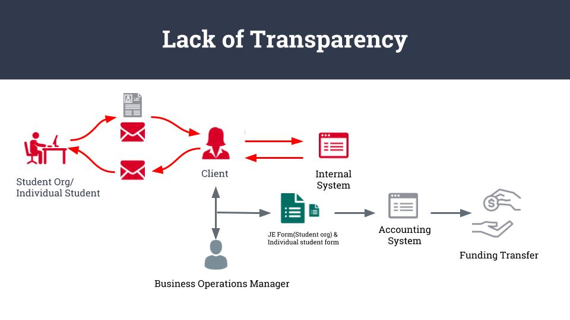
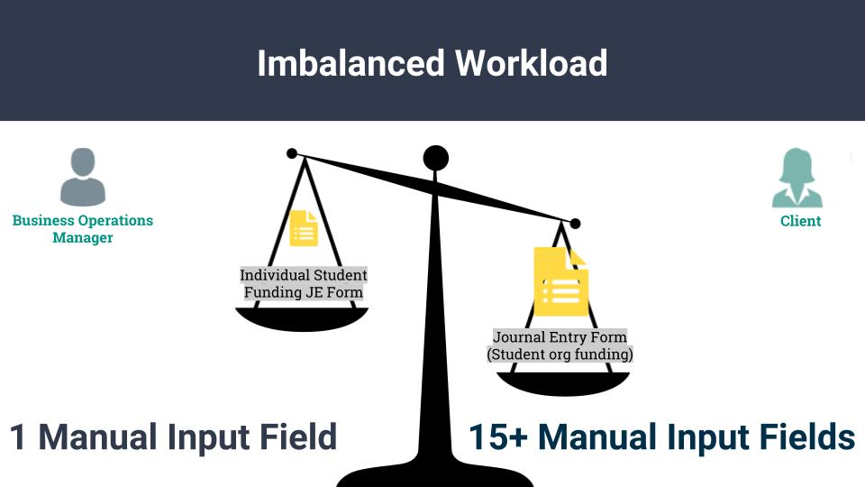
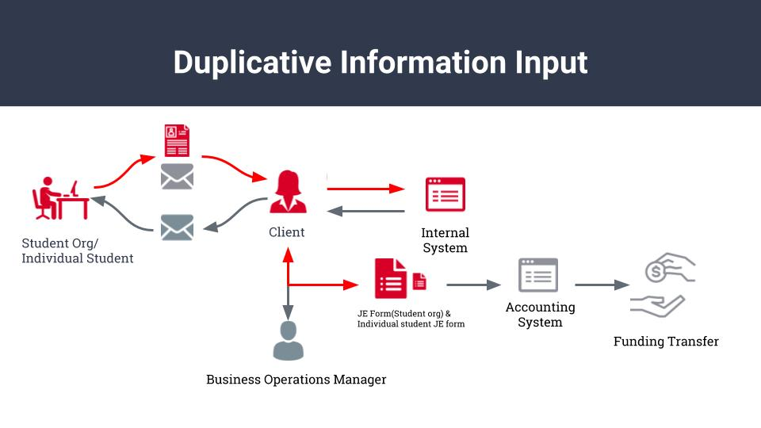

Summary
The University of Michigan College of Engineering Office of Student Affairs’ current workflow for processing student/student organization requests for funding has proven to be manually-intensive, duplicative, and inefficient in nature.
Team Lens interviewed College of Engineering staff and students to learn about their individual interactions with the funding process.
We discovered that the imbalanced workload between College of Engineering staff makes it so that one team member is heavily burdened with the manual data entry and related inefficient methods, which forces her to work irregular hours.
After investigation and analysis of the qualitative and quantative data, we recommended that the Office of Student affairs takes one of the following approaches to return time to the Office of Student Affairs staff members:
- Immediate Fix
- Hire a part-time, graduate student intern, as has been done before, whose sole responsibility is to handle the manual data entry and to cross-check current funding requests with last year’s information
- Systemic Fix
- Re-distribute the workload between College of Engineering staff
- Use the Google Forms and Zapier integration to re-populate forms based on responses
- Introduce application tracking system to make status retrieval less time-consuming
- Comprehensive Fix
- Implement customer relationship management software such as Insightly, Integrify, or Nintex to fully automate the process
Clients Background
The University of Michigan College of Engineering Office of Student Affairs provides support and opportunities for all of its engineering students on a wide variety of topics, including career services, advising, mental health, transfers, and more.
The Office of Student Affairs staff are spending a disproportionate amount of time on processing student and student organization applications for funding because of inefficiencies and inaccuracies created during the manual-intensive process of and reviewing, approving, and processing applications.
The Office requested that Team Lens review their current student/student organization funding request process and recommend practices to save time and improve efficiency.
Contexual Inquiry Interview Process
To determine the main sources of inefficiencies in the process, Team Lens interviewed Mariah Fiumara (Student Affairs Program Manager for the Office of Student Affairs and primary client), a member of Resource Planning for the University of Michigan (RP1), and three students (S1, S2, and S3). Mariah Fiumara and RP1 are both staff members that handle processing applications. S1, S2, and S3 are all College of Engineering students that have received funding for their student organizations and/or individually.
Keyfindings from the Affinity Wall
After conducting the interview, we interpreted and analyze the interview data. Using the method from affinity diagram, we concluded that there are three painpoints for the client.

Students have no issues with the actual process but transparency.
After conducting the interview, we interpreted and analyze the interview data. Using the method from affinity diagram, we concluded that there are two painpoints for the client.
One important finding is that the students agree that the process of applying funding is straightforward and fairly simple, as noted by S1, S2, and S3, though there are questions that are more difficult to answer for newer organizations.

Students requesting funding from the College of Engineering are generally satisfied by the process. All interviewed students praised Mrs. Fiumara’s availability and willingness to answer their questions and help to make the funding process as easy for them as possible. However, they would like more transparency in the process and the ability to access real-time updates about the status of their requests, including confirmation of when it had been received and how far along in the process it is.
Currently, they are able to turn to Mrs. Fiumara for updates and for any questions that they have. Since the desire for status updates is common among student organizations and the Office of Student Affairs processes 275 requests per year, answering questions from students consumes a considerable amount of Mrs. Fiumara’s time.
There is an imbalanced workload between Mariah and RP1
The second important finding was that there is a significant workload imbalance between Mrs. Fiumara and RP1. Though RP1 is unable to decide whether a student/student organization receives funding because of her role in accounting/auditing, she and Mrs. Fiumara can divide the role of manually entering information in the journal entry forms.
In the past, the Office of Student Affairs enlisted the help of a graduate intern that would assist Mrs. Fiumara with the data entry and manually-intensive parts of processing an application. This year, however, they were unable to hire an intern because of lack of interest in the position, and so the responsibilities of the intern were appended to Mrs. Fiumara’s duties. It is this component of the funding process that is forcing Mrs. Fiumara to work ten hour days and to come into the office on the weekends so that students can receive their funding in a timely manner.

In defining and separating their individual roles, Mrs. Fiumara had asked that RP1 take on some of the manual journal entry form tasks that Mrs. Fiumara has to do, since she felt that the workload that she was carrying would be overburdened by the additional task of filling out the manual journal entry forms. In the interview with RP1, she noted that if she were to take on some of the responsibilities that Mrs. Fiumara currently deals with for the journal entries, then this would slow down the process significantly, and that she would not answer any questions from Mrs. Fiumara about progress on the status of the requests until they were complete, which would take one to two weeks at a time. This imbalance is making it so that Mrs. Fiumara is frustrated with the process and feels that it cannot continue to be so lengthy, while RP1 had no complaints about the process.
Duplicative manual inputs prolongs the funding process.
The inefficient nature of processing the applications needs significant improvements so that Mrs. Fiumara does not need to manually hunt for information in a variety of sources (her email inbox, Qualtrics, Microsoft Excel, Google Forms, printed information) to cross-check, validate, and move applications forward. Because this process is entirely in her hands, it is prone to human error, which can be detrimental to the student organizations if their account information or requested amount is inputted incorrectly by Mrs. Fiumara. This forces Mrs. Fiumara to double check her work through every stage in the process, therefore lengthening the amount of time that it takes her to process a single application.

Inefficiencies, the demands of manual data entry, and the duplicative nature of the funding process are frustrating for the Office of Student Affairs staff and make it so that Mrs. Fiumara must work additional, non-regular working hours to ensure that students receive their requested funding on-time. The burden of processing the application falls heavily on her, though she and RP1 can theoretically split some of the manual work between them.
Recommendations
Immediate Fix
To immediately alleviate the burden of the amount of time that Mrs. Fiumara is spending on processing funding applications, Team Lens recommends that the Office of Student Affairs resumes its usual practice of hiring a part-time graduate intern whose role is to perform all of the manually intensive parts of the funding process (journal entry forms, data entry into Microsoft Excel, preparing documents to be presented to the monthly meeting with the review committee) and to communicate with students about questions that they have about the process, including status updates and notifications of whether or not approval has been granted for their funding requests.
Systemix Fix
Though hiring a graduate intern would be an immediate fix to Mrs. Fiumara’s task burden, it would serve as a type of “patch”, since the root of the issue would not be solved. A systemic fix would be to implement an application tracking system that would make student application status updates visible within the platform itself so that students would not have to ask Mrs. Fiumara for updates, which she notes is a significant amount of time that is currently lost to her.
Comprehensive Fix
A final, comprehensive solution to the problem of the inefficient student funding process is to completely automate the workflow to create a singular point/platform for student applicants and Office of Student Affairs staff to complete and check the status of the application.